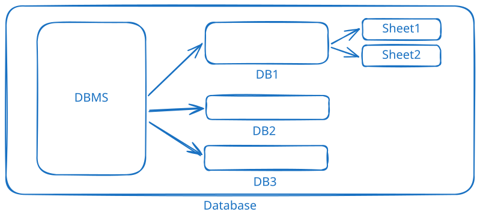

-- 创建数据库
CREATE DATABASE [IF NOT EXISTS] db_name
-- 创建数据库并指定字符集
CREATE DATABASE [IF NOT EXISTS] db_name
CHARACTER SET utf8
COLLATE utf8_general_ci
-- 创建数据库并指定排序规则
CREATE DATABASE [IF NOT EXISTS] db_name
COLLATE utf8_general_ci
-- 规避关键字冲突
CREATE DATABASE [IF NOT EXISTS] `db_name`
IF NOT EXISTS：如果数据库不存在，则创建数据库db_name：数据库名称CHARACTER SET：数据库字符集，如 utf8、gbkCOLLATE：数据库排序规则，如 utf8_general_ci、gbk_chinese_ci_ci：不区分大小写_cs：区分大小写_bin：二进制排序-- 查看所有数据库
SHOW DATABASES
-- 查看指定数据库的信息
SHOW CREATE DATABASE db_name
-- 查看指定数据库的字符集
SHOW VARIABLES LIKE 'character_set_database'
-- 查看指定数据库的排序规则
SHOW VARIABLES LIKE 'collation_database'
DROP DATABASE [IF EXISTS] db_name
-- 使用某个数据库
USE db_name
-- 查看现在使用的哪个数据库
select database();
-- 备份数据库到文件
mysqldump -u username -p db_name > 'path/to/backup/file'
-- 备份指定表到文件（一个表）
mysqldump -u username -p db_name table_name > 'path/to/backup/file'
-- 备份指定表到文件（多个表）
mysqldump -u username -p db_name table_name1 table_name2 > 'path/to/backup/file'
// 要先use，然后再source
SOURCE 'path/to/backup/file'